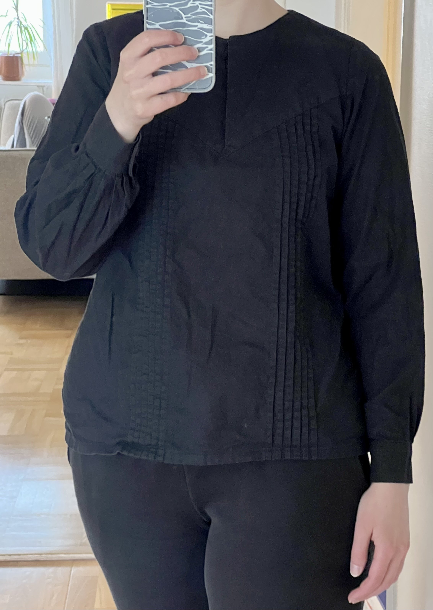

Black pinstripe Shirt
I drafted a shirt pattern with shoulder pieces that make a downward-pointed shape on the back and front, where the shape has a button (or hook and eye) closure. This is my go-to shirt pattern that I have made several times.
Black cotton shirt with hook and eye neck closure and buttoned cuffs. Symmetrical pinstripes in the frond and one pleat on each side in the back.
Orange Shirt
Orange linen shirt, with two pleats in the front (asymmetrical because I can't count) and two in the back. Button closure on the neck, and same buttons on the cuffs.


Grey Collared Shirt
This shirt is made from an old linen tablecloth that I dyed in the second dye bath of a black dye, resulting in this light grey color. The point has one piece of boning (6mm cable tie) next to the buttonholes.


Light blue blouse
This blouse is made from very nice linen that I was gifted from my grandma, who originally bought it to make an altar cloth, but she decided to go with a different one in the end so this was leftover. It was originally white, but I dyed it in the second dye bath with a black dye that has very cool undertones, resulting in this really nice light blue color. The front closes with hooks and eyes, invisible from the outside, and the buttonholes at the cuffs are handworked. The collar just attaches to the body with no neck band, which makes the fit in the back slightly weird because I didn't get the curve quite right, I should have added a neck band. Also, on the first try the sleeves were too long so I added a few rows of pin tucks, which I think turned out quite nice. I also made the skirt I am wearing in this, see here.
Light blue short sleeve shirt
This is from the same pattern and fabric as the light blue blouse above, except I have since figured out how to make a proper collar with a neckband, and I didn't have a lot of fabric left so it's cropped and short-sleeved. The collar and neck closure are finished by hand which is how I managed to get the edges so pointy. All the inside seams are french seams and the arm holes are finished with bias binding. The different button at the collar is definitely a design choice and not because i accidentally only bought seven grey buttons instead of eight.
Edwardian-inspired lace shirt
This edwardian lace shirt is very historically inspired, but all the construction techniques and materials are modern. The lace is secondhand, and the cotton is old curtains. The skirt in the pictures the one that goes with this jacket